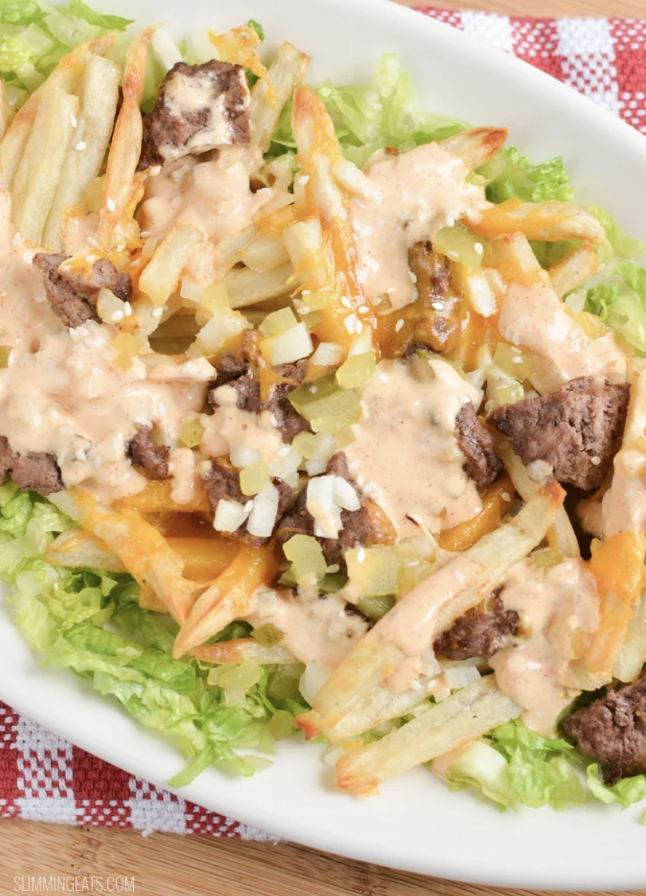

Big Mac Fries
Return to Main Page

Description
This is a recipe for quick, healthy and easy Big Mac Fries.
They are the perfect meal to make when you are unsure of what
to make, and you need something fast and delicious.
This recipe features ground beef, lettuce, onions, and the
homemade version of that famous Big Mac Sauce that we all
know and love.
Ingredients
- Ground beef
- Lettuce
- Potatoes
- Onions
- Pickles
- Mayo
- Mustard
- Ketchup
- Vinegar
- Salt & Pepper
Steps
- Peel and cut the potatoes into fries,
wash the potatoes until the water is clear
- Boil the potatoes for 10 minutes.
Drain, lightly salt and then airfry at 400 until crispy
- Cut up your lettuce, dice your onions and chop up the pickles into small cubes
- Mix two parts mayo with one part ketchup and mustard.
Add a splash of vinegar and water and mix well
- Stir fry your ground beef until brown, season with salt and pepper
- First lay down the fries, then beef, then sauce,
then top it off with your veggies
- Enjoy while hot!